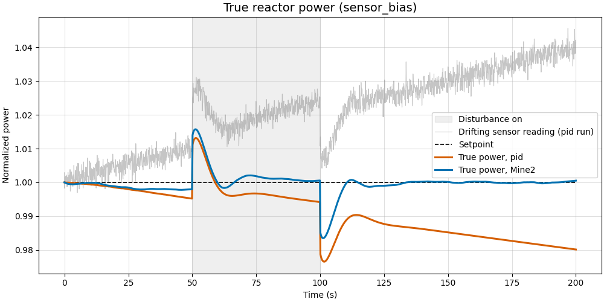
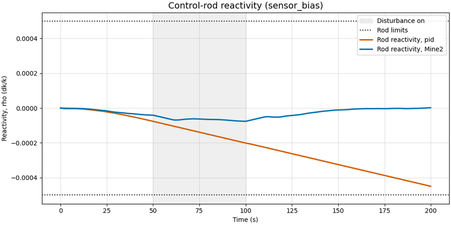
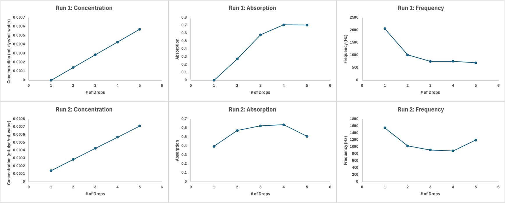
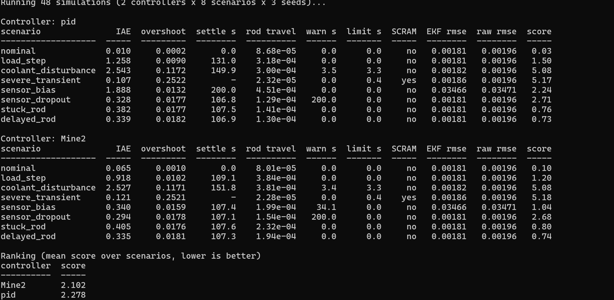

2026 Nuclear Innovation Challenge · Controls and instrumentation
Self-Checking Reactor Controller Simulated reactor control plus a dye concentration rig
A reactor power controller that catches its own drifting sensor, tested in simulation and paired with a bench rig that doses dye and measures concentration optically.
The problem
The baseline PID controller trusts one power sensor completely. If that sensor drifts, the controller follows it and moves the real reactor away from its target, and nothing in the loop notices.
Sensor cross-check
Fuel runs hotter than coolant in proportion to power, so a heat balance on the temperature sensors gives a second, independent power measurement. The controller tracks the slow difference between neutron and thermal power and corrects for it, capped at 10%.
Retune and scoring tool
We added a two-second filter on the power signal and raised the gain from 3e-4 to 1e-3. A Python scoring tool runs every controller through eight scenarios and grades tracking, rod movement and time in alarm states.
Results
Overall score improved from 2.28 to 2.10 (lower is better). On the drifting sensor, tracking error fell from 1.89 to 0.34 and rod range used dropped from 90% to about 15%. Setpoint changes settle about 20 s faster.
The dye rig
A bench analogue for boron injection: pumps dose dye into a stirred tank and a TCS3200 optical sensor infers concentration by Beer-Lambert, A = ε · l · c. A well-mixed mass balance gives the dosing time, with τ = V / Q = 350 mL / 7 mL/s = 50 s.
Limits
The calibration is only linear at low dose: absorbance flattens near 0.6 to 0.7 after three to four drops. The tank model assumes perfect mixing, and this is a teaching model, not licensing-grade analysis.



